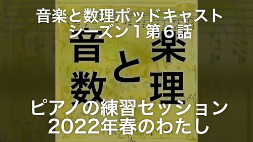
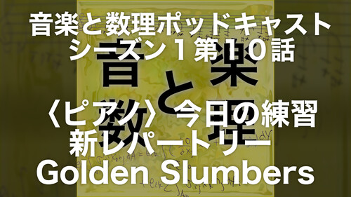

ZAF ２０２２年５月２５日
＜本日のテーマ＞
Let's Dance!
目次
- [6:30 - 7:00] 前座
- [7:00 - 9:00]
本編
Let's Dance!
- ...
- ……つづく
前座、その１
ZENKEI AI MAGAZINE
ZENKEI AI MAGAZINE
- 前々回、３月の ZAF2203 は、ゲストスピーカーとして「ちゃんもり」さんに講演してもらいました！


- ちゃんもりさんから、 ZAF2203 の発表の原稿が届きました！

- もう一人の発表者の「いちき」さんにプッシュをかけて、早いうちに
『ZAM 2022年３月号』
発行したいと思います！
- 付記：原稿もらってて、発行できてない『ZAM』たまってます。
- 全ての遅れの元凶である ZAM 編集長の「いちき」さんにプッシュをかけて、早いうちに
『ZAM 2022年３月号』だけでなく
『ZAM 2021年12月号』と
『ZAM 2021年7月号』も
発行します！
（できるだけ早く）


前座、その２
趣味１００％のポッドキャスト
ゴールデンウィークのチャレンジ
趣味１００％のポッドキャスト
ゴールデンウィークのチャレンジ
- 前回、４月の ZAF2204 で、


- で、その後、今年のゴールデンウィークに何をしたのか？
ポッドキャストの可能性を
いろいろ模索してみよう！
いちきけんごの可能性を
いろいろ模索してみよう！ - 現時点でのエピソードリスト（全１３本）


- 既にやってたこと
- ふつうの喋りのエピソード
- S01E02 〈裏〉最近の読書から - 意識と俳句と道元と (youtube)
- S01E08 〈トーク〉人生の定理 - エマソン「自己信頼」 (youtube)
- ショート・エピソード（ボイス・ダイアリー的な）
- S01E03 （ショート）LA LA LA in F (youtube)
- S01E09 〈ショート〉ぼくの趣味 - 種から育てる園芸 (youtube)
- ふつうの喋りのエピソード
- そもそも、やってみたかったこと
- 音楽番組（的なエピソード）
- S01E01 音楽と数理とは（All of You） (youtube playlist)
- S01E04 「表」自分でリクエスト - 日本のポップス特集 (youtube playlist)
- S01E11 〈表〉ジャズの新潮流 - 鼻歌系特集 (youtube playlist)
- その裏回（解説のしゃべりエピソード）
- S01E05 〈裏〉日本のポップス特集 - 自己解説 (youtube)
- S01E12 〈裏〉ジャズの新潮流 - 鼻歌系特集 (youtube)
- 音楽番組（的なエピソード）
- GW に挑戦したこと
- ピアノの練習を晒す
  - S01E06 〈ピアノ〉プラクティス・セッション - 2022年春のわたし (youtube)
- S01E10 〈ピアノ〉今日の練習 - 新レパートリー Golden Slumbers (youtube)
- 英語のエピソード、世界に向けて語りかける
- ピアノの練習を晒す
- ポッドキャストの中でも、繰り返し言っているように、
バズることは、悪だ！

PODCAST RANKING の
「個人ジャーナル」カテゴリー
ランクインしました！


- 今年のゴールデンウィークの総括
実りの多いゴールデンウィーク
チャレンジし尽くした！感じでした - ところで、いちきさん、
あなたの「チャレンジ」は
もうこれで終わりなのですか？
貴様の挑戦というのは
この程度のものか？ - 今日のテーマ
踊ってみた！
- これから、やります！
- 実は、今、頭の中にある、もう１つの残されたチャレンジがありますね。それは、
歌ってみた！
空気を自分自身の体で震わせて
音楽を演る
- 近いうちに、何らかの形で、挑戦してみたいと思ってます！（乞うご期待）


Let's Dance!
イントロ
ZENKEI AI FORUM で
なぜ今ダンスなのか？
- TVアニメ「パリピ孔明」OPテーマ「チキチキバンバン」
のダンスモーションデータが公開された！
https://twitter.com/paripikoumei_PR/status/1526517893696933889 （多分、これが第一報？ 5/17 の夜のことだな）
- BOOTH: ダンスモーションデータ


■内容物 ・CIKICIKIBAMBAM_eiko.fbx(モーションデータ) ・取扱説明書.txt ■商品詳細 ・3Dモデルは含まれておりません。 ・fbx形式となります。 ・30fps ・0fにTポーズあり ・開始フレーム：30f ・計2800フレーム ・Unityでご利用いただくことが可能です。 ・MMDでの使用はできません。
■利用規約 ・本モーションデータは「踊ってみた」の利用に限り改変が可能です。 ・本モーションデータは商用での利用は不可となります。 ・モーションデータの再配布、販売は禁止します（改変データ含む） ■免責事項 当モーションデータを利用することで発生したトラブルや損失、 損害に対して、製作者は一切責任を負いません。 当モデルを使用する際は利用者の責任において行ってください
- YouTube:
【踊ってみた】 with 3D Virtual 英子

- 注： Blender が最初にリリースされたのは 1994 年、２８年前でした。
(wikipedia)

- YouTube:
【踊ってみた】 with 3D Virtual 英子
- それを受けて、（当然の流れとして）、世間のその方面の人たちが動き始めた
- https://twitter.com/torikasyu/status/1526717938136653824 (9:14 AM · May 18, 2022)

- https://twitter.com/mitohakuren/status/1526925753031720960 (11:00 PM · May 18, 2022)

- 阿吽像が踊ってる
- 付記：まず「阿吽像」という呼び方はおかしいみたい（ググった）。
金剛力士像の阿形と吽形というらしい。 (cf. wikipedia)
あとこれ、甲冑着てるので、多分、毘沙門天か何かだと思う。
さらに、このモデルはこの人が一からモデリングしたみたい （仏像いろいろやってらっしゃる）。
- VR のホロラボの人たちも
https://twitter.com/peugeot106s16/status/1526750387759263744 (11:23 AM · May 18, 2022)
- https://twitter.com/torikasyu/status/1526717938136653824 (9:14 AM · May 18, 2022)


そういえば Perfume
- そういえば、似たようなことを（わが同郷の） Perfume がやってましたね
- しらべたら、これ、 2012 年の出来事でした。
cf. 踊るPerfumeのモーションキャプチャデータ公開 GitHubに「perfume-dev」ページ (2012年03月30日 12時19分 公開)
- １０年前！
- Perfume は、先進的だったんだね
- しらべたら、これ、 2012 年の出来事でした。

今日のお品書き
ダンスするために必要なこと
今日やること（踊るために）
コンピュータ上で、ね
- （１）リアル・アバターを作る
- （２）リアル・アバターに踊らせる
- （３）踊ってるビデオから踊りを抽出し、それを踊ってみる
一つのポイント（個人的な）
「リアル」アバター
- リアル・アバターに、拘ります
- それがなかったら、まぁ、アリモノのモデル （ユニティーちゃんとか） を使えばよい
- つまり、
「ぼく」が踊る
- コンピュータ上で、ね
（自分はダンスできないので）
- コンピュータ上で、ね
リアル・アバターの有名人
リアル・アバターな人々（ぼくにとって）
- 坪倉輝明
- https://twitter.com/kohack_v/status/1526569875971665921


- 実は、続くコメントが重要
- https://twitter.com/kohack_v/status/1526573206303539200
下絵を設定したカメラと重なる位置にモデルを置いてカメラからUVを透視投影。 もう一つちゃんと展開したUVを用意してそっちにベイク。 それをベースにPhotshopで見えてない裏側部分のテクスチャを描いていくと。 （コピースタンプツールとコンテンツに応じた塗りつぶし機能最高） #blender
- 付記：写真から（手で） 3D を構築するはなしといえば、
昔 YouTube の Blender のチュートリアルで
そういうのみたことがあった
- ググって見つけました。これ
Create a Subway in Blender in 20 minutes (Jan 17, 2018) Blender Guru さん
- ググって見つけました。これ
- 付記その２：
西洋絵画の巨匠も
（光学）機械を使ってトレースしてたらしい！？
- その本を、記憶を頼りに探して、見つけました。 amazon.co.jp:
秘密の知識 (デイビッド・ホックニー)

- あと、ちょこっと口にした「岡本太郎」は、これです。
今日の芸術（岡本太郎）
- その本を、記憶を頼りに探して、見つけました。 amazon.co.jp:
秘密の知識 (デイビッド・ホックニー)
- https://twitter.com/kohack_v/status/1507363023476125699
(11:25 PM · Mar 25, 2022)

- BOOTH: TsubokuLab Store 【3Dモデル】坪倉輝明

僕の体です。 UnityPackage形式での配布になります。 VRChat向けに調整済みのモデルです。 フルボディトラッキング対応＆トポロジー調整をしたV2も追加しました。 ------------------- 【 規約要約 】 商用利用 ： 個人→◯ 法人→ご連絡下さい なりすまし : × エロ・グロ : × 改変 : ◯ 自作のアプリや動画などに利用 : ◯ ソーシャルVR(VRChat等）のアバターとして利用 ： ◯ ・著作権表示 表記可能であれば以下の表示をお願いします。(任意) ©Teruaki Tsubokura
- https://twitter.com/kohack_v/status/1526569875971665921
- せきぐちあいみ
- https://twitter.com/sekiguchiaimi/status/964139206183288832 (11:07 PM · Feb 15, 2018)

【3Dモデルフリー素材】 4パターンの私の3Dモデル(Obj、Rig入りFBX、Unityパッケージ、Unityプロジェクト)を 下記URLからダウンロードできます！是非創作活動等にご活用頂けたら嬉しいです こちらの素材は個人、法人、商用、非商用問わず無料でご利用頂けます。編集や加工も可能です。 【以下に該当する場合はお断り致します】 ・極端にせきぐちあいみのイメージを損なうような利用 ・素材自体をコンテンツ・商品として再配布、販売 ・その他不適切と判断した場合 クレジット表記は不要ですが、 こんなことに使ってみたよー！というご報告は大歓迎です( ^ω^ ) twitter @sekiguchiaimi #せきぐちあいみ
- https://twitter.com/sekiguchiaimi/status/964139206183288832 (11:07 PM · Feb 15, 2018)
- このお二人が、ぼくの中での
リアル・アバター二大巨頭！


今、リアル・アバターに挑戦する
もう１つの理由
- 理由の１つは、先に言ったように「データが出た」でしがが、
もう１つ、理由があります。 - 例えば、前回の ZAF-2204

最近の GAN はスゲェ
最近の AI はスゲェ
- 実際、１枚の写真から人物の 3D モデルを生成するモデルをいくつか紹介しました。
- JIFF (https://twitter.com/ak92501/status/1518395877378953217)

JIFF: Jointly-aligned Implicit Face Function for High Quality Single View Clothed Human Reconstruction
- arxiv: 2204.10549
- github page: https://yukangcao.github.io/JIFF/
- PHORHUM (https://twitter.com/XRandrew/status/1517565098788896768)

This new 2D image -> 3D object reconstruction work from Google Research is 🤯
- しかし、その時にもコメントしましたが、残念ながら
コードは、まだ、公開されていません……
- JIFF (https://twitter.com/ak92501/status/1518395877378953217)
- ということで、その時は諦めたんですが、
（今回、ダンスデータが公開された！というタイミングで、ちょっと盛り上がったので）
もう少し、調べてみました
- そしたら、ちょうど、こんなツイートに出会った
https://twitter.com/psyth91/status/1519320796744884227 (11:21 PM · Apr 27, 2022)
- ちなみに、このツイートは PIFu 作者の Shunsuke Saito さんですね
- HuggingFace Spaces: radames/PIFu-Clothed-Human-Digitization

- が、これ（このとき）自分の画像をアップしてもエラーが出て動かなかった……
- ソースコード
github: shunsukesaito/PIFu
を、クローンして、ローカルの GPU マシンで実験してもダメ
ってことで、一旦、諦めてた…- 付記：その後、問題は解決した。ライブラリのバージョンの問題だった。
- そうこうしてたら、見つけました！
PIFuHD
新しいバージョン！ - project page:
https://shunsukesaito.github.io/PIFuHD/

- 論文は 2020 年に出てました。（PIFu は 2019 年）
arxiv: 2004.00452 - そして、なにより、
コードも、既に、公開されていました！

- 論文は 2020 年に出てました。（PIFu は 2019 年）
- ということで、今日は
AI (PIFuHD) を使って
リアル・アバターつくります！


そのほか
リアル・アバター周辺の情報
- いろいろ調べてて遭遇した人
- 2020 年ごろ、初期 PIFu でリアルアバター目指してた chie さん
https://twitter.com/crispytaffy/status/1253974619435855873 (6:10 PM · Apr 25, 2020)
- しかし、どうもリアルアバター路線は諦めたのかな？


- しかし、どうもリアルアバター路線は諦めたのかな？
- リアル・アバターで小人さん（真顔）になった人
https://twitter.com/acari_neco/status/1525768319781183488 (6:21 PM · May 15, 2022)
- 2020 年ごろ、初期 PIFu でリアルアバター目指してた chie さん
- Facebook 改め Meta の最新の「リアル・アバター」デモ！
https://twitter.com/AR_Ojisan/status/1522364960114098176 (8:57 AM · May 6, 2022)


リアル・アバターの
これまでと
今
- これまでのリアル・アバターの作成には
全身の 3D スキャンで作成する必要でした
（というか、これが正攻法）- 例えば、「リアルアバター」で検索すると出てくる
そのなもずばり「リアルアバター株式会社」

（記事は「日刊工業新聞」 https://www.nikkan.co.jp/releases/view/112220 - PR TIMES）
- 例えば、「リアルアバター」で検索すると出てくる
そのなもずばり「リアルアバター株式会社」
- 最近は、もっとお手軽に、というソリューションも出てきてて
- ハンディな測距センサーを使って、自分でやる人もいるし、
- もっと最近だと iPhone に載った LiDAR で、
自分で自分をスキャンする人とかもいる。
- github: Michigari/iwama

- github: Michigari/iwama
- ということで、今日の ZENKEI AI FORUM では、ここで実際に
AI を使って
簡単に
リアルアバターを作ります！

{kind=link}
{kind=link}
{kind=link}
{kind=link}
{kind=link}
{kind=link}
ということで、改めて
今日のお品書き（再掲）
- （１）リアル・アバターを、 AI で簡単に 作る
- （２）リアル・アバターに踊らせる
- （３）踊ってるビデオから踊りを抽出し、それを踊ってみる
もうちょっと詳しく書くと
- （１）リアル・アバターを作る
- （１−１）写真１枚から、自分の 3D モデルを AI で作る (PIFu)
- （１−２） 3D モデルにテクスチャを貼って、 ボーンを入れて、リアルアバターにする (Blender)
- （２）既存のダンス（モーションキャプチャデータ）を使って、 リアルアバターを踊らせる (Unity)
- （３）既存のダンスシーン（動画）から、 AI で骨格をとって、リアルアバターで踊らせる (MediaPipe)
リアル・アバターと
VTuber という文脈での
倒錯感（おもしろい）
- リアル・アバターできたら、
「お、オレもこれで VTuber になれる」
フェイストラッキングして、
リアル・アバターを動かして、
おもしれーっ
ふと、
「あれ、
オレ、今、普通に YouTuber やってるのって、
それじゃん？」
（これ自体が、なんかおもしろいね）
……つづく